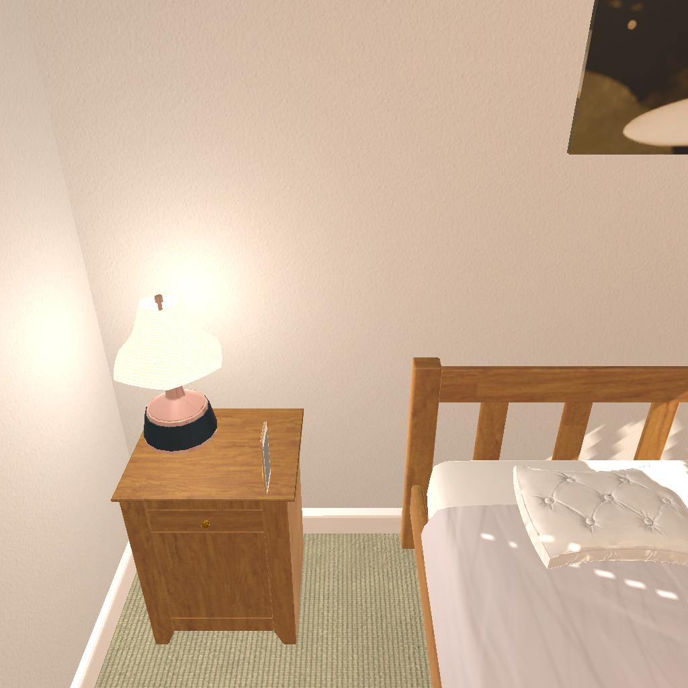

---------------------------------------------------------task: 0---------------------------------------------------------
--------------------------------------------------------------------------------------------------------------------------------------------------------------------
--------------------------------------------------------------------------------------------------------------------------------------------------------------------
Step:--------------------------------------------------------------------------12-------------------------------------------------------------------------------
----------------------------------------
VLM Prompt:
**Task**
Please perform as an embodied AI agent. Our final objective is to look at alarmclock under the desklamp. Below is the plan for completing the task, the current observation, alongside historical data and admissible actions for the next step. Please determine the best action for the next step!
**Plan**
Below is a detailed step-by-step plan to complete the task.
1. Find an alarm clock.
2. Pick up the alarm clock.
3. Locate a desklamp.
4. Turn on the desklamp.
5. Position the alarm clock under the desklamp so that it is illuminated.
6. Look at the illuminated alarm clock to complete the task.
**Current Observation**
Displayed is an image capturing the current position of the agent.
Objects in The Image: ['bed', 'pillow', 'bedside table', 'lamp', 'pen', 'wall', 'carpet', 'picture frame']
**History Information**
Displayed are the previous observations with their corresponding actions.
State 0:
No history.
State 1:
1. Step Index in the Plan: 1
2. Objects: Bedside Table, Lamp
3. Action: go to sidetable 1
State 2:
1. Step Index in the Plan: 2
2. Objects: Bedside Table, Lamp
3. Action: go to drawer 1
State 3:
1. Step Index in the Plan: 2
2. Objects: Bedside Table, Lamp
3. Action: open drawer 1
State 4:
1. Step Index in the Plan: Unknown (Continuation from a previous step)
2. Objects: Lamp, Bedside Table, Open Drawer (potentially containing alarm clock)
3. Action: take alarmclock 1 from drawer 1
State 5:
1. Step Index in the Plan: 4
2. Objects: Bedside Table, Lamp (assumed desklamp), Alarm Clock (previously picked up)
3. Action: use desklamp 1
State 6:
1. Step Index in the Plan: 5
2. Objects: Alarm Clock, Desklamp, Bedside Table
3. Action: close drawer 1
State 7:
1. Step Index in the Plan: 5
2. Objects: Nightstand, Desklamp (illuminated), Alarm Clock (likely held by agent)
3. Action: go to sidetable 1
State 8:
1. Step Index in the Plan: 5
2. Objects: Alarm Clock, Desklamp, Bedside Table
3. Action: take cellphone 1 from sidetable 1
State 9:
1. Step Index in the Plan: 5
2. Objects: Bed, Nightstand, Desklamp, Smartphone (Cellphone), Pencil, Picture Frame, Pillow, Carpet
3. Action: put cellphone 1 in/on sidetable 1
State 10:
1. Step Index in the Plan: 5
2. Objects: Bed, Pillow, Bedside Table, Lamp, Wall, Picture Frame, Pen
3. Action: go to dresser 1
State 11:
1. Step Index in the Plan: 5
2. Objects: Desk, Various Objects, Alarm Clock, Desklamp (not visible)
3. Action: go to sidetable 1
**Admissible Actions**
(1): go to bed 1
(2): go to drawer 1
(3): go to drawer 2
(4): go to drawer 3
(5): go to drawer 4
(6): go to drawer 5
(7): go to drawer 6
(8): go to drawer 7
(9): go to drawer 8
(10): go to drawer 9
(11): go to drawer 10
(12): go to drawer 11
(13): go to safe 1
(14): go to laundryhamper 1
(15): go to garbagecan 1
(16): take pillow 1 from sidetable 1
(17): take cellphone 1 from sidetable 1
(18): take pencil 1 from sidetable 1
(19): use desklamp 1
**Analysis Guideline**
1. Analyze the history and current observation, and then determine our current step in the plan and our current place.
2. List all visible objects related to the task in the current observation, without summarizing any as "various items."
3. Analyze the objects in the current observation based on the history and the requirements for the current step, and then determine if we can complete the step with the current observation.
4. Analyze and decide on the most appropriate action to take.
5. Summarize the analysis using the following format: "Analysis: [The summarization of the analysis], The Most Appropriate Action: (i which is the integer.): [Selected action]"
**Notes**
1. We must complete each step of the plan in order and cannot skip steps when the previous ones are not finished.
2. For "Go to" actions listed as "go to xxx [n]", interpret this as there are n distinct actions available: "go to xxx 1", "go to xxx 2", ..., "go to xxx n". Select one specific action from these options instead of using "go to xxx [n]".
3. If receptacles such as drawers, cabinets, and so forth are closed in the current observation, we may try to open them.
4. Pay attention to synonyms and ensure clarity in the terms used.
5. We must determine and provide the single action which must be in the **Admissible Actions**.
6. If there is no history available, we are at the first step and the current place is "Unknown".
**Answer**
Please select the most suitable action by following the **Analysis Guideline**, keeping the above **Notes** in mind.
----------------------------------------
----------------------------------------
VLM Response:
Analysis: The current step in the plan appears to be step 5, which involves positioning the alarm clock under the desklamp so that it is illuminated. The current observation shows a bedside table with a lamp that is turned on, which is assumed to be the desklamp mentioned in the plan. The alarm clock is not visible in the current observation, but based on the history, it can be inferred that the agent has already picked up the alarm clock (State 4). There is no need to go to the bed, drawers, safe, laundry hamper, or garbage can as those actions do not contribute to the current step in the plan. Also, we do not need to take any objects from the sidetable, as the alarm clock is already assumed to be held by the agent. The next logical action to perform is to place the alarm clock under the illuminated desklamp. However, this action is not explicitly listed in the admissible actions. Therefore, we must choose the best available option that aligns with our objective. Since the agent is already at the sidetable with the desklamp (as per State 11), the most appropriate action from the list given would be to use the desklamp, which could imply positioning the alarm clock in a way that it is illuminated by the lamp, completing step 5 of the plan.
The Most Appropriate Action: (19): use desklamp 1
----------------------------------------
----------------------------------------
>>> Refine VLM Response and Get Pure Action: use desklamp 1
----------------------------------------
-----------------------------------------------------------------
Running time: 9.673721313476562 seconds
Total Money: 0
-----------------------------------------------------------------
-----------------------------------------------------------------
Summarization Prompt:
**Context**
Analysis: Since there is no history information, we are at the first step in the plan, which is to find a statue. The current place is unknown. In the current observation, we see a floorlamp next to an armchair with a small table that has a small object on it, which could potentially be the statue we are looking for. Since the plan requires us to find a statue first and it appears there might be one on the table next to the armchair, we should investigate this object to determine if it is the statue we need.
The Most Appropriate Action: (1): go to armchair 1
**Summary**
1. Step Index in the Plan: 1
2. Objects: Floorlamp, Armchair, Small Table, Small Object (potential statue)
3. Action: go to armchair 1
**Context**
Analysis: The current step in the plan appears to be step 5, which involves positioning the alarm clock under the desklamp so that it is illuminated. The current observation shows a bedside table with a lamp that is turned on, which is assumed to be the desklamp mentioned in the plan. The alarm clock is not visible in the current observation, but based on the history, it can be inferred that the agent has already picked up the alarm clock (State 4). There is no need to go to the bed, drawers, safe, laundry hamper, or garbage can as those actions do not contribute to the current step in the plan. Also, we do not need to take any objects from the sidetable, as the alarm clock is already assumed to be held by the agent. The next logical action to perform is to place the alarm clock under the illuminated desklamp. However, this action is not explicitly listed in the admissible actions. Therefore, we must choose the best available option that aligns with our objective. Since the agent is already at the sidetable with the desklamp (as per State 11), the most appropriate action from the list given would be to use the desklamp, which could imply positioning the alarm clock in a way that it is illuminated by the lamp, completing step 5 of the plan.
The Most Appropriate Action: (19): use desklamp 1
Please summarize the context by following above examples when providing the summary, and ensure that only the summary is included, without any extra explanation.
**Summary**
-----------------------------------------------------------------
-----------------------------------------------------------------
Summarization Response:
1. Step Index in the Plan: 5
2. Objects: Bedside Table, Desklamp (turned on), Alarm Clock (held by agent)
3. Action: use desklamp 1
-----------------------------------------------------------------
-----------------------------------------------------------------
Text Observation:Nothing happens.
-----------------------------------------------------------------
UNSUCCEED